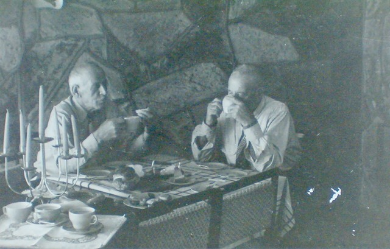
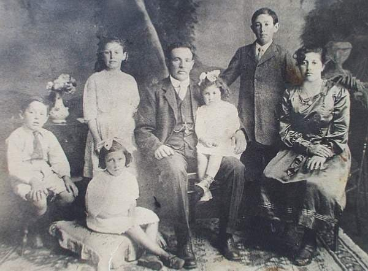
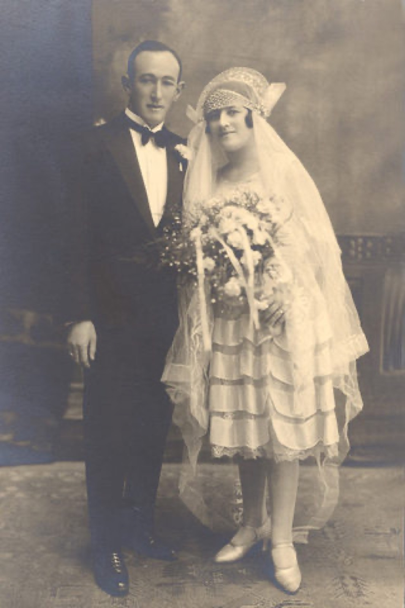
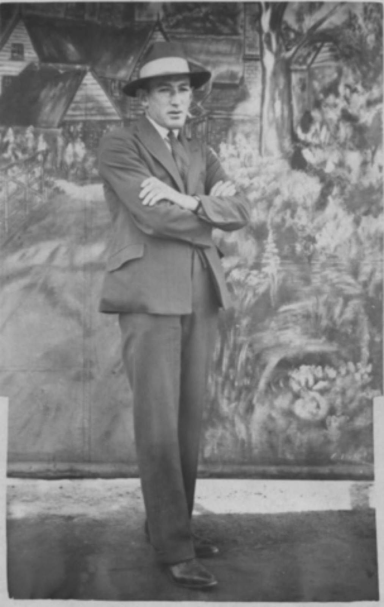
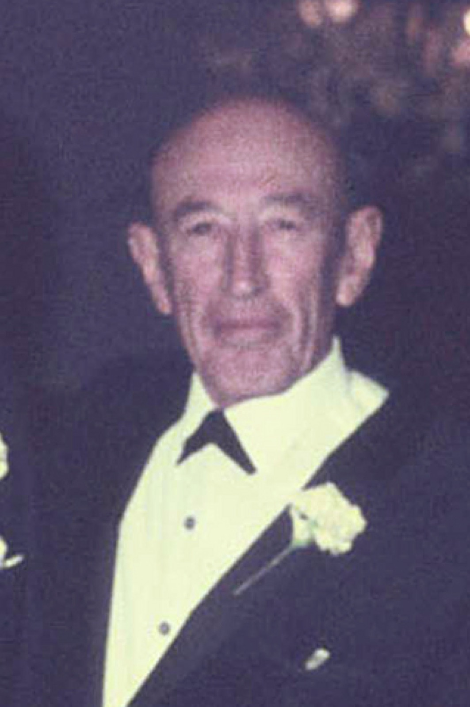
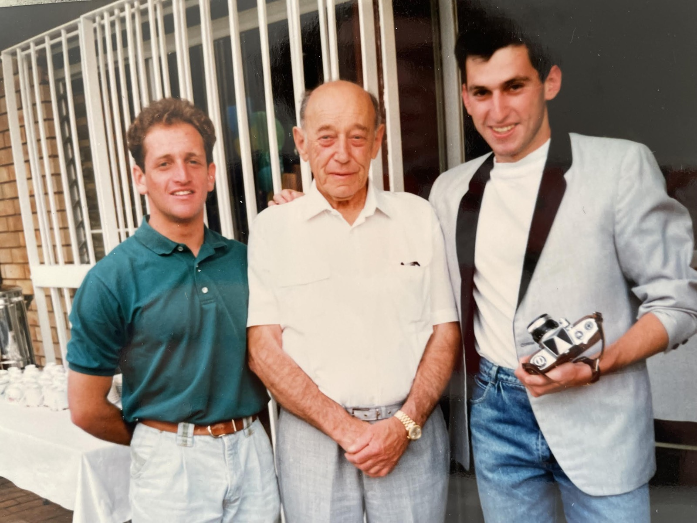

Max and Riva, 1938
Marriage register, saved viewer screenshot.Max and Riva’s marriage, 1938
Open saved recordGilinsky family / Benoni, Upington & Johannesburg
Max and Riva, Shlomo’s Upington store and the siblings whose stories connect Benoni, Mayfair and Florida Lake.

Mark confirms that the Gilinsky family lived in Benoni before moving to Upington. The date of the move remains unknown. Gidon Katz’s account of his mother Milly’s childhood independently recalls this sequence. The store photograph preserves a concrete part of that world: the sign S. Gilinsky — General Dealer. The identification of the man as Shlomo and the location as Upington come from Mark.Gilinsky family identifications — Mark CohenGidon Katz — Memories of MayfairShlomo outside his Upington store

Max (Mackie) Gilinsky and Riva (Masie / Mazie) Milstein married in Johannesburg on 25 December 1938. Certificate 595 gives Max’s age as 28 and occupation as general dealer; Riva is 19, Poland-born and a typist. Her mother supplied consent. The record links this branch to the Milstein–Lederer story.Max and Riva’s marriage, 1938
Mark recalls that Max owned Station Jewellers on Station Street, Mayfair, for many years. Katz’s published recollection names a watch and jewellery business belonging to Maxie Gilinsky, supporting the trade and neighbourhood. It does not provide the trading name, street number or opening and closing dates. Those remain research questions.Gilinsky family identifications — Mark CohenGidon Katz — Memories of Mayfair

The burial register records Max’s death on 3 June 2000, burial the next day, and Hebrew name Mordecai son of Shlomo. Riva died and was buried on 1 June 2015. Their graves adjoin. Max’s precise birth date of 1 October 1910 remains a family-tree entry rather than a birth record inspected here.Max and Riva’s adjoining gravesRiva Gilinsky — Ethan Cohen’s family history
Mark identifies Shlomo as Max’s father. The matching civil death registration names Solomon Gilinsky, a general dealer, who died on 24 August 1956 at 101 Ninth Avenue, Mayfair. M. Gilinsky signed as the person arranging burial; the form does not explicitly call him a son. The gravestone gives the Hebrew name Shlomo son of Eliezer.Gilinsky family identifications — Mark CohenSolomon’s civil death registration, 1956Solomon Gilinsky’s gravestone
A 1918 court catalogue names Solomon Gilinsky versus Leah Dinah, born Nasatir. A Johannesburg marriage register then records Leah Dinah Gilinsky, born Nasatir, a divorcee aged 41, marrying Jacob Mowsovitz on 12 May 1920. These records strongly identify the court-case party, but a direct original linking her to Max is still needed. Anne Spiro’s estate index names her parents as Solomon and Lea Gilinsky.Solomon and Leah Dinah, 1918 court catalogueLeah Dinah’s remarriage, 1920Anne Spiro’s estate index
The Upington register records a divorced general dealer named Solomon Gilinsky marrying Rachel Skop, a widow, on 17 December 1921. This is a plausible remarriage of Max’s father, but it has not yet been linked through named children or an estate. The unidentified woman in the early family photograph should therefore not automatically be named Leah or Rachel.Solomon and Rachel’s marriage, 1921Gilinsky family identifications — Mark Cohen
Gidon Katz describes two brothers and four sisters. The six names below fit that count and the recorded family conversation. The chart is a research reconstruction, not proof that one document names all six. Order below is not birth order.
Gidon Katz — Memories of MayfairMark, Natalie and Luba: recent conversationSix siblings reconstructed from family accounts and separate records
Edith’s gravestone calls her Edith (Edie) Lang, names father Shlomo, and gives death on 31 January 1956, aged 53. A Gazette notice establishes her maiden surname as Gilinsky and her residence at Rand Leases, Florida. Her estate number is 1336/56. These details make her a strong candidate for Max’s sister. The Edith–Morris marriage has not been located.Edith (Edie) Lang’s gravestoneEdith Lang estate notice, 1956
Fanny Gilinsky married Bennie Lang on 25 November 1937 in Johannesburg. Both were Mayfair residents; she was a saleslady aged 24 and he a Lithuania-born salesman aged 32. Fanny’s stone gives death on 23 January 1987 and a Hebrew patronymic naming Shlomo. Bennie’s stone names wife Fanny and gives death on 7 October 1976.Fanny and Bennie’s marriage, 1937Fanny Lang’s gravestoneBennie Lang’s gravestone
The family conversation recalls relationships involving Edith, Fanny, Morris and Bennie. A Morris Lang burial entry gives death on 1 May 1973, in the grave numbered immediately after Edith’s. This is a lead, not proof of marriage or brotherhood. No later marriage or partnership between Fanny and Morris has been established.Mark, Natalie and Luba: recent conversationMorris Lang burial registerBennie Lang’s gravestone
Annie’s original Upington marriage is dated 4 December 1929. Jack Spiro was 29, Ireland-born and a commercial traveller; Annie was 21 and South Africa-born. A candidate estate index for Anne Spiro gives parents Solomon and Lea Gilinsky, husband Jacob Spiro, birth year 1908 and death on 28 April 2007. The original estate image is unavailable, so those later details remain index-derived.Annie and Jack’s marriage, 1929Anne Spiro’s estate index
Solly’s stone gives 25 December 1978, names wife Sarah and the Hebrew patronymic Israel son of Shlomo. A marriage index records Solly and Sarah Gayer on 24 June 1928. Katz calls her Sara Geyer and connects her and sister Eva with the Ochberg group; the original marriage and immigration evidence still need closer inspection. Sarah’s stone gives 27 June 1991 and father Eliyahu.Solly Gilinsky’s gravestoneSolly and Sarah’s marriage indexGidon Katz — Memories of MayfairSarah Gilinsky’s gravestone
Family identifications are credited to Mark Cohen. No child has been named through facial comparison. Dates and unidentified people stay open for inscriptions, family recollections or records to resolve.









Mark identifies Jonathan Berger as his cousin through Max → Masha Berger → Jonathan. In the photograph, Jonathan is at left, Max in the centre and Mark at right. Date and location remain unknown.Jonathan, Max and Mark
Mark’s mother Luba married Leonard Lewis Cohen. Their wedding portrait is preserved in the Cohen branch; its date and venue have not been supplied.Luba and Leonard’s wedding portraitMark Cohen: Cohen family recollections
Open the saved file or follow its citation to the archive. FamilySearch viewer captures are labelled screenshots; they are not original-resolution downloads.
Marriage register, saved viewer screenshot.Max and Riva’s marriage, 1938
Open saved recordMarriage register, saved viewer screenshot.Fanny and Bennie’s marriage, 1937
Open saved recordRemarriage register, saved viewer screenshot.Leah Dinah’s remarriage, 1920
Open saved recordCivil death registration, saved viewer screenshot.Solomon’s civil death registration, 1956
Open saved recordTAB MHG 6258/56 may name spouses, children, parents and birthplace. An enquiry was sent on 20 November 2026; the file has not been received.Solomon Gilinsky estate catalogue
Obtain estate 1336/56 and locate Edith’s marriage. Her estate number falls between FamilySearch’s displayed 1333–1335 and 1338 ranges. That is a coverage gap, not a missing-file finding.Edith Lang estate notice, 1956
Look for dated directories, advertisements, shop papers and writing on photo backs. The trading years and unnamed children remain unresolved.Gilinsky family identifications — Mark Cohen
Mark, Natalie and Luba discuss Max, Riva and life in Mayfair. These clips come from the same conversation as the supplied transcript.Reminiscing with Luba — video playlist
A shelter index names Sch. Gilinsky, a 26-year-old bootmaker from Kowno, staying in London from 5 to 11 December 1902, onward aboard Dunolly Castle. The initial, birthplace and marital circumstances do not establish him as Shlomo. Exact-surname Findmypast results for 1900–1904 went to North America; South Africa spelling variants remain candidates without inspected originals.Sch. Gilinsky: 1902 shelter candidate
A different group travelled on Avondale Castle, 24 November 1906: Mrs L. Gilinsky, 28; E., 2; and S., 3, bound for Cape Town. The emigrant index names Leie and a three-day shelter stay; Findmypast indexes them as Gilensky. They could be Leah, Edith and Solly, but no original establishes that identification.Gilinsky / Gilensky travelling group, 1906
The catalogue also contains S. Gilinsky’s naturalisation file, TAB CS 847/14202. It supplies no date or full first name. An enquiry was sent on 21 November 2026; the file and its identification remain outstanding.S. Gilinsky naturalisation catalogue